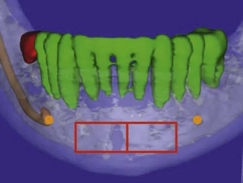
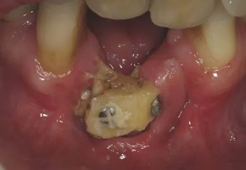

نسخه استخراجشده؛ ترجمه یا تأیید علمی انجام نشده است. وضعیت: captured
طرح برداشت بلاک سیمفیز با سه عدد تعریف میشود، و هر عدد از یک ساختار محافظت میکند:
۵ میلیمتر از هر فورامن منتال — محافظت از عصب منتال.
۵ میلیمتر پایینتر از ریشههای دندانهای قدامی — محافظت از پالپ. همین مرز را میتوان اینطور هم بیان کرد: بخش فوقانی محل برداشت باید دستکم ۵ میلیمتر زیر سطح نوک ریشهی دندانهای ثنایا آماده شود تا از اختلال نوروسنسوری جلوگیری گردد.
۵ میلیمتر از حاشیهی تحتانی مندیبل — محافظت از یکپارچگی خود مندیبل.
و همین سه مرز است که در تصویر «طرح نادرست» نقض میشود: طرحی که بیشازحد نزدیک به فورامن منتال و نواحی اپیکال دندانها باشد.
یک عدد چهارم برای طرحریزی: میانگین فاصلهی بین دو فورامن منتال بیش از ۴۴ میلیمتر است، ولی اندازهگیری دقیق حتماً باید پیش از برداشت انجام شود. میانگین را جای اندازهگیری این بیمار نگذار.
برش: برشهای سولکولار معمولاً در مندیبل قدامی برای برداشت سیمفیز به کار میروند وقتی بافت کراتینیزه کمتر از ۴ میلیمتر ارتفاع دارد یا عضلانی قویتر مشاهده میشود. برش تا دیستال کانینها امتداد مییابد و یک برش رهاساز عمودی به طول حدود ۱۰ میلیمتر — بالاتر از ارتفاع فورامن منتال — زده میشود.
عمق برداشت: بلاک سیمفیز معمولاً حدود ۵ میلیمتر زیر ریشههای دندانهای قدامی برداشته میشود و تا پلیت لینگوال امتداد مییابد، ولی خود پلیت لینگوال سوراخ یا برداشته نمیشود. اگر برداشت عمدتاً برای افزایش عرض استخوان باشد، استئوتومی تحتانی معمولاً ۵ میلیمتر بالاتر از حاشیهی تحتانی مندیبل برنامهریزی میشود.
نکتهی CBCT: تصویربرداری سهبعدی امکان مشاهدهی کامل محل گرافت و پرهیز از عوارض ناخواسته را میدهد — بهویژه نقض کف دهان با ساختارهای بسیار پرعروقش مانند شریانهای سابلینگوال و سابمنتال.

عوارض برداشت و پیوند بلاک را با تصویر و عدد ببین؛ بیشترشان به عبور از مرزهای ایمنی یا به بافت نرم برمیگردند.
شکستگی پلیت سیمفیزیال — علتش روشن است: انتخاب نامناسب بیمار برای گرافت سیمفیز. یعنی عارضهای که پیش از تیغ، در جلسهی طرح درمان ساخته میشود.
در معرض قرار گرفتن کمپلکس عصب آلوئولار تحتانی — این عارضه بیشتر در برداشت راموس پیش میآید: گاهی پس از برداشتن بلاک، این کمپلکس قابل شناسایی میشود. و محل دهندهی بیشازحد بزرگ میتواند به در معرض قرار گرفتن IAN و اختلال نوروسنسوری بینجامد.
اگر عصب در معرض قرار گرفت، یک اقدام مشخص وجود دارد: دگزامتازون (دکادرون) ۴ میلیگرم (۱ سیسی) را میتوان مستقیماً روی عصب به کار برد تا التهاب کاهش یابد.
روی عصب نمایان چه بگذاری: میتوان اسفنج کلاژن روی محل گذاشت، اما هیدروکسیآپاتیت یا مادهی پیوند اندیکاسیون ندارد. این را با نقص سیمفیز یکی نکن: پس از برداشت بلاک سیمفیز، نقص را میتوان با مادهی پیوند ذرهای (مثلاً هیدروکسیآپاتیت میکروپور) و ممبران کلاژن پر کرد تا کانتور چانه حفظ شود؛ و در محل دهندهی راموس معمولاً یک پانسمان هموستاتیک (کلاژن یا اسفنج ژلاتینی) کافی است.
باز شدن برش و دهیسنس بلاک یکی از عوارض شناختهشدهی پیوند بلاک است. در یک سری ۱۳۷ موردی این نرخها گزارش شده است: اکسپوژر ممبران ۴۲ مورد (۳۰٫۷٪)، باز شدن خط برش ۴۱ مورد (۳۰٪)، و سوراخ شدن مخاط روی استخوان پیوندی ۱۹ مورد (۱۴٪).
این اعداد کوچک نیستند — تقریباً یک مورد از هر سه.
و اگر دهیسنس رخ داد، چه؟ دو قاعدهی روشن داریم:
• بافت نرم نباید دوباره روی گرافتی که در ماههای نخست دهیسه شده بخیه شود.
• در صورت دهیسنس گرافت، زخم باید با ترمیم ثانویه بهبود یابد: بخشی از بلاک که بالاتر از لبههای بافت بیرون زده با فرز الماسی تراشیده میشود (بیوفیلم هم با آن برداشته میشود)، بیمار دهانشویهی کلرهگزیدین میگیرد، و این کار هر ۲ تا ۴ هفته تا بسته شدن محل تکرار میشود.
مرز خطر واقعی کجاست؟ در معرض قرار گرفتن بلاک و ذرات همراه آن، بههمراه وجود ترشح چرکی، نشانهی شکست قریبالوقوع گرافت است. یعنی اکسپوژر تنها هشدار است؛ اکسپوژر با چرک، تشخیص است.
